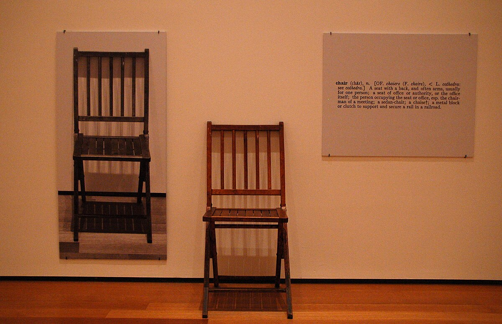
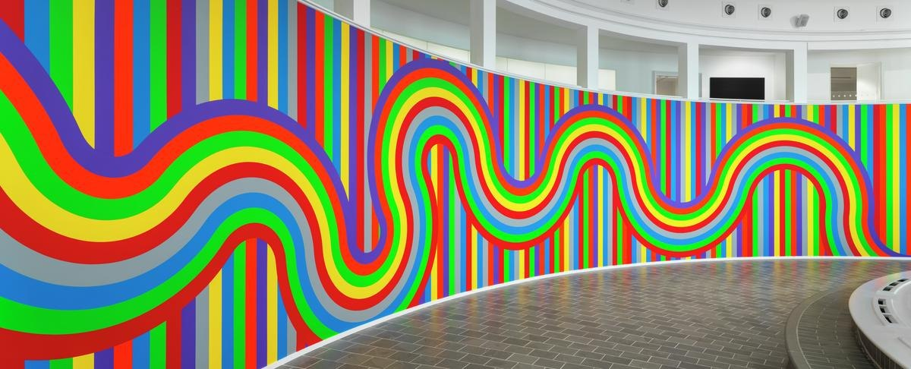
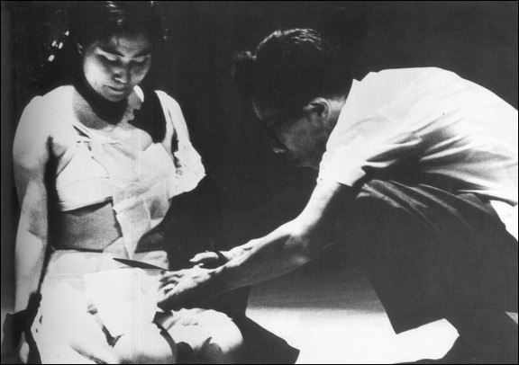
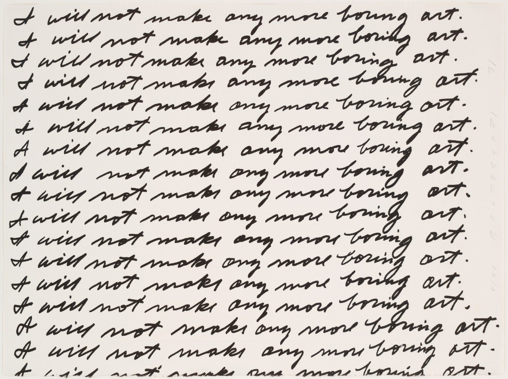
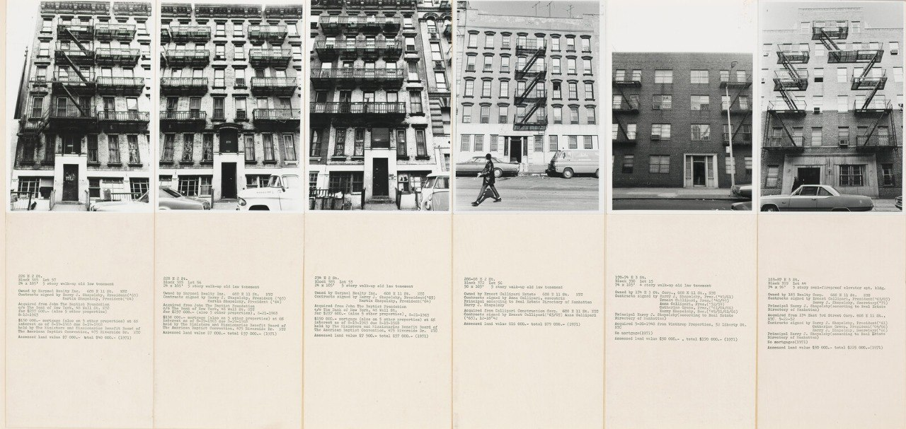
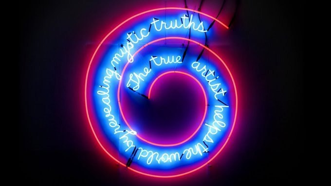
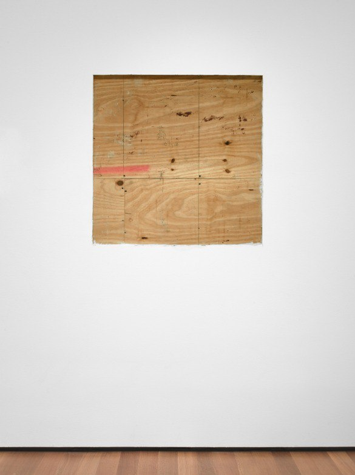
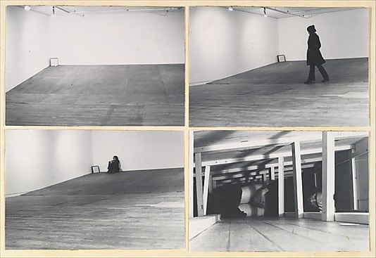
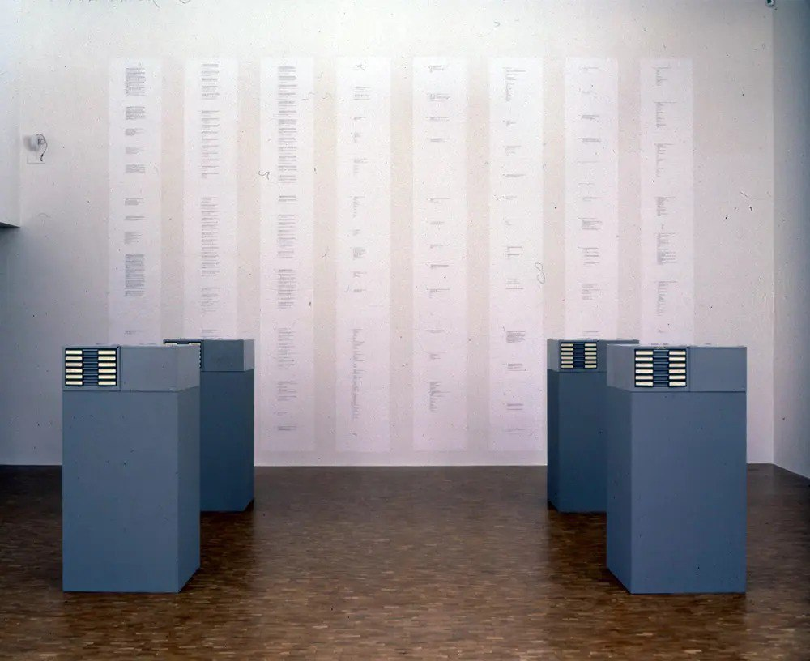
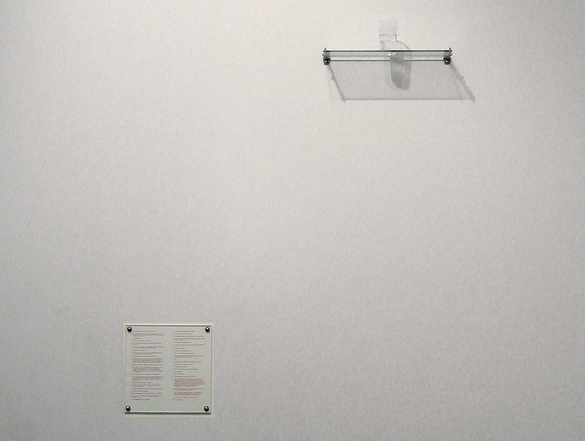

Meesterwerk: One and Three Chairs
Joseph Kosuth, 1965

⚜️ STIJLFIGUREN & KENMERKEN
💡 HET CONCEPT ALS MEDIUM
Dematerialisatie: Het fysieke kunstwerk is secundair. Het idee telt.
Taal: Woorden, definities, instructies. Tekst als beeld.
🔗 Tijdsgeest Connecties
Filosofie: Wittgenstein's "Philosophical Investigations" (1953) - taal als spel, betekenis door gebruik
Wetenschap: Informatietheorie (Shannon, 1948) - ideeën als overdraagbare data
Kunst: Duchamp's readymades - het concept belangrijker dan het handwerk
🏛️ INSTALLATIE & RUIMTE
Ruimte als medium: De galerie is onderdeel van het werk.
Context: Waar kunst wordt getoond bepaalt wat kunst is.
🔗 Tijdsgeest Connecties
Politiek: Institutional Critique - kritiek op het museum als machtsstructuur
Filosofie: Foucault's "Discipline and Punish" (1975) - instituties vormen subjectiviteit
Architectuur: Minimalisme - kunst als ruimtelijke ervaring
🎭 PERFORMANCE & ACTIE
Body art: Het lichaam als canvas en medium.
Ephemeraliteit: Kunst die slechts een moment bestaat.
🔗 Tijdsgeest Connecties
Politiek: Vietnamprotesten - actie als expressie, kunst als protest
Psychologie: Anti-psychiatrie (R.D. Laing) - het lichaam als politiek strijdtondeel
Feminisme: Vrouwelijke kunstenaars claimen hun lichaam terug
📄 DOCUMENTATIE
Foto's, teksten, certificaten: Het spoor van het kunstwerk.
Archief: Herinnering als kunstvorm.
🔗 Tijdsgeest Connecties
Wetenschap: Semiotiek (Peirce, Barthes) - teken, object, interpretant
Literatuur: Oulipo - kunst door regels en systemen
Technologie: Xerox-kunst - reproductie als creatie
🎨 TIEN MEESTERWERKEN - GEDETAILLEERDE ANALYSE
1. "One and Three Chairs" (1965) — Joseph Kosuth
Verschillende collecties | Houten stoel, foto van stoel, tekstpaneel | 82 × 37 × 53 cm

Achtergrond
Het paradigmatische werk van conceptuele kunst: een fysieke stoel, een foto van die stoel, en een verklarende tekst. Kosuth presenteert drie representaties van "stoel" en vraagt: welke is het "echte" kunstwerk? Het idee van stoel is belangrijker dan elk object.
🔍 STIJLANALYSE
Semiotiek: Het object, de afbeelding, de definitie - drie representatieniveaus.
Taal-filosofie: Wittgensteiniaanse vragen over betekenis en referentie.
Dematerialisatie: Het concept "stoel" staat centrum, niet de fysieke items.
Instrumentaliteit: De objecten zijn hulpmiddelen voor het idee - wegwerpbare tools.
2. "Wall Drawing #1136" (2004) — Sol LeWitt
Tate Modern, Londen | Inkt op muur | Variabele afmetingen

Achtergrond
LeWitt schreef instructies die door anderen worden uitgevoerd. De "kunstenaar" is de conceptuele maker; de "uitvoerders" zijn ambachtslieden. Dit democriteert kunstproductie en bevraagt het romantische idee van het unieke genie.
🔍 STIJLANALYSE
Instructie als kunst: Het conceptuele plan is primair; de uitvoering is secundair.
Reproduceerbaarheid: Hetzelfde werk kan opnieuw gemaakt worden volgens de instructies.
Geometrie: Systematische, wiskundige benadering van compositie.
Anonimiteit: LeWitt's hand is niet zichtbaar - de kunstenaar treedt terug.
3. "Cut Piece" (1964) — Yoko Ono
Performance | Yamaichi Concert Hall, Kyoto | 20 minuten

Achtergrond
Ono zat stil op het podium terwijl het publiek stukjes van haar kleding mocht knippen. Een radicale overdracht van controle en een onderzoek naar gender, kwetsbaarheid, en geweld. Het werk is tijdelijk, uniek per uitvoering, en kan nooit worden gereproduceerd.
🔍 STIJLANALYSE
Participatie: Het publiek IS het werk - zonder hun actie gebeurt er niets.
Vrouwelijk lichaam: Een feministische statement over eigendom en objectificatie.
Kwetsbaarheid: Het offer van het zelf als artistieke strategie.
Trust: Een experiment in menselijke natuur - wat doet een publiek met macht?
4. "I Will Not Make Any More Boring Art" (1971) — John Baldessari
Nova Scotia College of Art and Design | Muurtekst, uitgevoerd door studenten

Achtergrond
Baldessari vroeg studenten om deze zin herhaaldelijk op een muur te schrijven, als een soort strafregels. Een ironische en zelfreferentiële statement over wat kunst is of zou moeten zijn. De boodschap is simpel maar de implicaties zijn complex.
🔍 STIJLANALYSE
Ironie: Het werk zelf IS vervelend - het moet duizenden keren geschreven worden.
Deconstructie: Het ondermijnen van kunst als "belangrijk" of "diepgaand".
Collaboratie: De kunstenaar als directeur, niet als maker - studenten als handen.
Regel als kunst: Het pedagogische strafregel-formaat als esthetisch statement.
5. "Shapolsky et al. Manhattan Real Estate Holdings" (1971) — Hans Haacke
Documentaire installatie | Foto's, teksten, grafieken | Museum afhankelijk

Achtergrond
Haacke documenteerde de vastgoedpraktijken van een New Yorkse slumlord. Het Guggenheim Museum weigerde het tentoon te stellen en ontsloeg de curator. Dit werk lanceerde "Institutional Critique" - kunst die de machtsstructuren van musea blootlegt.
🔍 STIJLANALYSE
Onderzoeksjournalistiek: Kunst als onderzoek, exposé, politieke actie.
Institutionele kritiek: Het museum wordt onderdeel van het onderwerp - wie financiert kunst?
Documentaire esthetiek: Geen "kunstenaarsstijl" maar neutrale presentatie van feiten.
Censuur: De afwijzing door het Guggenheim werd onderdeel van het werk's geschiedenis.
6. "The True Artist Helps the World by Revealing Mystic Truths" (1967) — Bruce Nauman
Privécollectie | Neon buis | 59 × 55 × 5 cm

Achtergrond
Een neon spiralel met de tekst die de titel vormt. Nauman ironiseert het romantische kunstenaarsideaal terwijl hij het tegelijkertijd bevestigt. Het werk hangt als een café-uithangbord maar presenteert een hoogdravende boodschap over kunstenaarschap.
🔍 STIJLANALYSE
Ironie: De hoogdravende tekst in commerciële neon stijl - ernst of grap?
Taal als beeld: De woorden zijn letterlijk lichtgevend - taal als verlichting.
Spiraal: De vorm verwijst naar mystieke symboliek en oneindigheid.
Kitsch: Commerciële esthetiek toegepast op "serieuze" kunst.
7. "A 36\" x 36\" Removal to the Lathing or Support Wall of Plaster or Wallboard from a Wall" (1968) — Lawrence Weiner
Taalwerk - kan op muur worden geschilderd of op papier worden getoond

Achtergrond
Weiner's werk bestaat uit tekst die een actie beschrijft. Het kan worden uitgevoerd (op een muur geschilderd) of gewoon worden gelezen. De kunstenaar beweert: "Het werk bestaat zolang iemand het begrijpt." Een radicale dematerialisatie van het kunstobject.
🔍 STIJLANALYSE
Taal als sculptuur: Woorden worden driedimensionale instructies voor verbeelding.
Optioneel maken: Het fysieke werk is niet nodig - het concept is genoeg.
Democratie: Iedereen kan het werk "maken" door de instructies te volgen.
Industrial aesthetic: De taal is technisch, droog, functioneel - geen poëzie.
8. "Seedbed" (1972) — Vito Acconci
Sonnabend Gallery, New York | Performance | 3 weken

Achtergrond
Acconci lag verborgen onder een houten vloer in de galerie en masturbeerde terwijl bezoekers boven hem liepen. Hij fluisterde fantasmen via speakers. Een grensoverschrijdend werk over intimiteit, exhibitionisme, en de relatie tussen kunstenaar en publiek.
🔍 STIJLANALYSE
Seksualiteit als medium: Het meest private wordt publieke performance.
Geluidslandschap: De bezoeker hoort maar ziet niets - een auditieve ervaring.
Architectuur: De vloer als grens tussen publiek en privé, gezien en ongezien.
Obsessie: De repetitieve daad als artistieke discipline - extreme toewijding.
9. "Index 01" (1972) — Art & Language
Documentaire installatie | Foto's, teksten, lijsten | Variabele afmetingen

Achtergrond
Een collectief van kunstenaars en filosofen documenteerde hun eigen gesprekken en presenteerde deze als kunstwerk. Het werk bestaat uit teksten, indices, en verwijzingen naar andere teksten. Een radicale bewering dat taal zelf het medium van kunst kan zijn.
🔍 STIJLANALYSE
Collectiviteit: Geen individuele kunstenaar maar een groep - auteurschap vervaagd.
Referentialiteit: Teksten die naar teksten verwijzen - oneindige regress.
Anti-visueel: Kunst die je moet lezen, niet zien - intellectuele uitdaging.
Filosofische kunst: De grens tussen kunst en filosofie wordt uitgewist.
10. "An Oak Tree" (1973) — Michael Craig-Martin
National Gallery of Australia, Canberra | Glas water op plank | 7.5 × 25 × 11.5 cm

Achtergrond
Een glas water op een plank, vergezeld door tekst waarin Craig-Martin beweert dat dit een eikenboom IS. Hij legt uit dat de verandering niet fysiek maar conceptueel is. Een extreme test van de kracht van artistieke intentie - kan het woord de werkelijkheid veranderen?
🔍 STIJLANALYSE
Geloof: Kunst als geloofssysteem - het werkt als je het accepteert.
Transubstantiatie: Een seculiere versie van het christelijke dogma (brood wordt lichaam).
Magie: De kunstenaar als tovenaar die transformatie bewerkstelligt.
Absurditeit: Logica opgedreven tot het onmogelijke - een glas water is geen boom.
📚 TIJDSGEEST CONTEXT ()
🌍 POLITIEK PERSPECTIEF
De Conceptual Art (1960-1980) ontwikkelde zich in een politieke context die werd gekenmerkt door de Koude Oorlog, de Vietnamoorlog, studentenprotesten en de bredere culturele revolte van de jaren zestig en zeventig. De politieke structuur werd gedomineerd door de strijd tegen de oorlog, de strijd voor burgerrechten, vrouwenrechten en homorechten, en de bredere kritiek op het kapitalisme, het imperialisme en de gevestigde orde. De Conceptual Art ontwikkelde zich als een radicaal antwoord op de traditionele opvattingen over kunst: zij stelde dat het "idee" of "concept" achter een kunstwerk belangrijker was dan de materiële realisatie. Kunstenaars als Joseph Kosuth, Sol LeWitt, Lawrence Weiner, Yoko Ono en de groep Art & Language creëerden werken die bestonden uit taal, instructies, documentatie of eenvoudige gebaren, waarbij de materiële vorm secundair of zelfs irrelevant was.
De sociale dynamiek werd gekenmerkt door een fundamentele revolte tegen de kunstmarkt, de galerijen, de musea en de hele institutionele structuur van de kunstwereld. De conceptual artists verachtten de commercialisering van kunst, de verheerlijking van het kunstenaarsgenie en de materialistische focus op unieke, kostbare objecten. Zij zochten naar vormen van kunst die niet konden worden gekocht, verkocht of verzameld: taal, ideeën, tijdelijke installaties, performances, documentatie. Joseph Kosuth's "One and Three Chairs" (1965), dat bestond uit een echte stoel, een foto van die stoel en een definitie van het woord "stoel", stelde fundamentele vragen over de aard van representatie, betekenis en kunst. Sol LeWitt's "Wall Drawings", die bestonden uit instructies die door anderen konden worden uitgevoerd, ontkoppelden het kunstwerk van de hand van de kunstenaar.
De politieke dimensie van de Conceptual Art was expliciet en fundamenteel. Vele conceptual artists waren politiek radicaal: zij gebruikten kunst als een instrument van kritiek, protest en revolutie. De feministische kunstbeweging, met kunstenaars als Judy Chicago, Miriam Schapiro en de groep Guerrilla Girls, gebruikte conceptuele strategieën om de patriarchale structuur van de kunstwereld aan de kaak te stellen. De artistieke kritiek op de Vietnamoorlog, met werken als Chris Burden's "Shoot" (1971), waarin de kunstenaar zich liet schieten door een assistent, gebruikte extreme vormen van performance en conceptuele kunst om de gewelddadigheid van de oorlog te verbeelden. De Conceptual Art ontwikkelde zich ook in relatie tot linkse politieke theorie, met name het marxisme en de kritische theorie, die de rol van kunst in de kapitalistische samenleving bevraagden.
De verbinding tussen politiek en artistieke stijl was direct en intentioneel. De Conceptual Art's verheerlijking van het idee boven de materiële realisatie was een revolte tegen de commercialisering van kunst en de rol van de markt in de bepaling van waarde. Door kunstwerken te creëren die niet konden worden gekocht of verkopen - taal, instructies, tijdelijke installaties - onttrokken de conceptual artists zich aan de logica van het kapitalisme. Tegelijkertijd stelden zij fundamentele vragen over de aard van kunst, betekenis en representatie: wat is kunst als de materiële vorm irrelevant is? Wat is de rol van de kunstenaar, de kijker, de context in de bepaling van betekenis? De Conceptual Art was daarmee niet slechts een esthetische beweging, maar een filosofische en politieke revolte tegen de gevestigde orde van de kunstwereld en de bredere kapitalistische samenleving.
Bronnen: Wikipedia - Conceptual art, Joseph Kosuth, Sol LeWitt, Art & Language, Feminist art movement, Vietnam War protests, Institutional critique.
📖 LITERAIR PERSPECTIEF
De conceptuele kunst, die in de jaren zestig en zeventig van de twintigste eeuw tot bloei kwam, deelde met de literatuur een fundamentele fascinatie voor taal als primair medium. Waar traditionele beeldende kunst zich richtte op visuele esthetiek, stelde de conceptuele kunst – geïnitieerd door figures als Marcel Duchamp (1887-1968) met zijn 'readymades' uit 1917 – dat het idee of concept belangrijker was dan de materiële uitvoering. Deze verschuiving creëerde een natuurlijk bruggenhoofd naar de literatuur, waar taal immers altijd al het medium van concepten was geweest.
Joseph Kosuth (1945) formuleerde in zijn invloedrijke essay 'Art after Philosophy' (1969) dat kunst een analytische proposisie was, een stelling die direct leunt op de filosofische taalfilosofie van Ludwig Wittgenstein (1889-1951) en de logische analyse van Bertrand Russell (1872-1970). Kosuths installatie 'One and Three Chairs' (1965) – bestaande uit een echte stoel, een foto van die stoel, en een woordenboekdefinitie van 'stoel' – is in essentie een literair werk dat de relatie tussen object, afbeelding en taal onderzoekt.
De Amerikaanse schrijver William S. Burroughs (1914-1997) ontwikkelde in de jaren zestig zijn 'cut-up' techniek, waarbij hij bestaande teksten fysiek in stukken knipte en willekeurig her arrangeerde. Deze methode, geïnspireerd door de brion Gysin (1916-1986), vertoonde sterke overeenkomsten met het werk van conceptuele kunstenaars als Lawrence Weiner (1942-2021), die zijn kunstwerken vaak als tekst op muren schreef zonder materiële objecten te creëren. Weiners 'Statements' (1968) bestond uitsluitend uit taalkundige beschrijvingen van potentiële kunstwerken.
In de literatuur manifesteerde de conceptuele benadering zich het duidelijkst in de 'Oulipo' beweging (Ouvroir de littérature potentielle), opgericht in 1960 door Raymond Queneau (1903-1976) en François Le Lionnais (1901-1984). Oulipo-schrijvers werkten onder wiskundig gedefinieerde beperkingen – zoals Georges Perec (1936-1982) die in 'La Disparition' (1969) een volledige roman schreef zonder de letter 'e' te gebruiken. Deze methodologische benadering van literatuur vertoonde sterke parallellen met de 'systematic art' van conceptuele kunstenaars als Sol LeWitt (1928-2007), die in 'Paragraphs on Conceptual Art' (1967) schreef dat 'het idee of concept het belangrijkste aspect van het kunstwerk is'.
De Amerikaanse dichter en kunstenaar John Baldessari (1931-2020) combineerde tekst en beeld in werken als 'I Will Not Make Any More Boring Art' (1971), waarbij hij een schoolbord-achtige strafregel herhaalde als commentaar op de kunstwereld. Deze ironische, zelfreferentiële benadering vond weerklank in de postmoderne literatuur van schrijvers als Thomas Pynchon (1937) en Don DeLillo (1936), die in romans als 'Gravity's Rainbow' (1973) en 'White Noise' (1985) systemen van betekenis en hun deconstructie exploreerden.
Joseph Beuys (1921-1986) breidde het conceptuele discours uit met zijn notie van 'sociale plastiek' – de maatschappij als kunstwerk dat door iedereen gevormd kan worden. Zijn beroemde uitspraak 'Jeder Mensch ist ein Künstler' vond literaire parallellen in het werk van de Duitse schrijver Peter Handke (1942), die in 'Die Publikumsbeschimpfung' (1966) het theater als conceptuele ruimte onderzocht. De Nederlandse schrijver Armando (1929-2018) verbindt in zijn werk conceptuele strategieën met historische reflectie, waarbij de taal zelf als materie wordt behandeld.
De Belgische kunstenaar Marcel Broodthaers (1924-1976), oorspronkelijk dichter, vertaalde literaire concepten direct naar beeldende kunst in werken als 'Musée d'Art Moderne, Département des Aigles' (1968-1972), een fictief museum dat de institutie kunst ironisch onderzocht. Zijn 'Un coup de dés jamais n'abolira le hasard' (1969) – een sculpturale interpretatie van het gelijknamige gedicht van Stéphane Mallarmé (1842-1898) – toont hoe conceptuele kunst literaire moderniteit kon visualiseren. De Canadese schrijver en kunstenaar Ken Lum (1956) werkt nog altijd op dit snijvlak, waarbij hij taal en beeld combineert om identiteit en representatie te bevragen in werken die zowel literair als conceptueel functioneren.
🧠 PSYCHOLOGISCH PERSPECTIEF
De conceptuele kunst van de jaren zestig en zeventig vertoonde een opmerkelijke parallel met de cognitieve psychologie die in dezelfde periode tot bloei kwam. Waar behaviouristen als B.F. Skinner (1904-1990) zich richtten op waarneembaar gedrag, benadrukten cognitieve psychologen als Jean Piaget (1896-1980) en Jerome Bruner (1915-2016) de rol van mentale processen, concepten en betekenisgeving – precies de elementen die ook in de conceptuele kunst centraal stonden.
Joseph Kosuth (1945) stelde in 'Art after Philosophy' (1969) dat kunst een 'analytische propositie' was, een stelling die direct leunde op de taalfilosofie die ook de cognitieve psychologie beïnvloedde. Zijn 'One and Three Chairs' (1965) – een stoel, een foto van een stoel, en een definitie van 'stoel' – fungeert als een psychologisch experiment dat de toeschouwer dwingt na te denken over de mentale representatie van objecten. Dit werk vertoont sterke overeenkomsten met de 'categorisatie-experimenten' van Eleanor Rosch (1938) in de jaren zeventig, die aantoonde dat mensen objecten categoriseren op basis van prototypische voorbeelden.
De 'dematerialization of the art object' die Lucy Lippard (1937) beschreef in 'Six Years: The Dematerialization of the Art Object' (1973) kan psychologisch worden begrepen als een verschuiving van fysieke naar mentale verwerking. Waar traditionele kunst direct de zintuigen prikkelde, vereiste conceptuele kunst cognitieve inspanning – precies wat cognitieve psychologen 'top-down processing' noemen: het actief construeren van betekenis door de toeschouwer.
Sol LeWitt (1928-2007) maakte de psychologische implicaties van conceptuele kunst expliciet in 'Paragraphs on Conceptual Art' (1967): 'The idea becomes a machine that makes the art.' Deze notie van kunst als systeem vertoonde parallellen met de 'informatieverwerkingstheorie' die in de jaren zestig de psychologie domineerde. LeWitts 'Wall Drawings', uitgevoerd door assistenten volgens zijn instructies, onderzochten de psychologische relatie tussen idee, uitvoering en waarneming.
Bruce Nauman (1941) verkende in werken als 'The True Artist Helps the World by Revealing Mystic Truths' (1967) – een neon tekst die de toeschouwer dwong de waarheid van de stelling te evalueren – de psychologische processen van geloof en twijfel. Zijn 'Studio Pieces' (1967-1968) documenteerden routineuze activiteiten in zijn atelier, wat psychologen zouden herkennen als een onderzoek naar de 'flow experience' die Mihaly Csikszentmihalyi (1934-2021) beschreef in zijn gelijknamige boek (1990). Nauman's latere installaties, zoals 'Raw Materials' (2004) in de Tate Modern, gebruikten gesproken teksten om de toeschouwer in een staat van onzekerheid te brengen die psychologisch functioneerde als een confrontatie met de eigen mentale processen.
Yoko Ono (1933) creëerde in 'Instruction Paintings' (1961-1962) werken die uitsluitend uit tekstuele instructies bestonden, die de toeschouwer mentaal moest uitvoeren. Haar 'Painting to See the Skies' (1961) – 'drill a hole in the canvas and see the sky through it' – activeert wat cognitieve psychologen 'mental imagery' noemen: het vermogen om beelden voor de geest te halen zonder fysieke stimuli. Ono's 'Cut Piece' (1964), waar toeschouwers stukken van haar kleding mochten knippen, onderzocht de psychologische grenzen van vertrouwen, kwetsbaarheid en agressie.
De 'Institutional Critique' van kunstenaars als Michael Asher (1943-2012) en Hans Haacke (1936) kan psychologisch worden begrepen als een onderzoek naar de sociale psychologie van macht en autoriteit. Haacke's 'Shapolsky et al. Manhattan Real Estate Holdings' (1971), dat de vastgoedbezittingen van een New Yorkse verhuurder documenteerde, dwong toeschouwers hun eigen positie in systemen van ongelijkheid te overwegen – een vorm van wat psychologen 'cognitive dissonance' noemen: de onaangename ervaring van conflicterende overtuigingen.
⚙️ HISTORISCH PERSPECTIEF
De conceptuele kunst kwam op in de late jaren 1960, tijdens een periode van fundamentele maatschappelijke veranderingen en intellectuele revoluties die de aard van kunst, taal en betekenis zelf ter discussie stelden. De wereld bevond zich in een staat van flux: de studentenrevoltes van mei 1968 in Parijs, de burgerrechtenbeweging in de Verenigde Staten, de anti-Vietnamoorlog protesten wereldwijd, en de seksuele revolutie daagden gevestigde autoriteiten en tradities uit. Deze context van maatschappelijke onrust was essentieel voor het ontstaan van conceptuele kunst, die zelf de autoriteit van het kunstobject en de kunstenaar in twijfel trok. De technologische context was revolutionair: de mainframe computer was aanwezig op universiteiten en grote instellingen, de eerste experimenten met videoteknologie maakten nieuwe vormen van documentatie en kunstproductie mogelijk, en de satellietcommunicatie transformeerde de snelheid waarmee informatie en beelden over de wereld verspreid werden. Kunstenaars als Sol LeWitt, Joseph Kosuth en Lawrence Weiner gebruikten deze nieuwe media om de nadruk te leggen op idee boven esthetiek, op proces boven product, en op taal als primair medium. De economische context was er een van welvaart in het westen, maar ook van groeiende kritiek op het kapitalisme. De kunstmarkt was in de jaren 1960 geïnstitutionaliseerd geraakt, met galeries, musea en verzamelaars die bepaalden wat kunst was en wat het waard was. Conceptuele kunstenaars reageerden hierop door werken te maken die niet verkoopbaar waren: instructies, teksten, tijdelijke installaties en performances die de commercialisering van kunst ondermijnden. De filosofische context werd gedomineerd door het structuralisme en de taalfilosofie. Ludwig Wittgenstein's onderzoek naar taal en betekenis, Ferdinand de Saussure's analyse van tekens, en later Jacques Derrida's deconstructie beïnvloedden kunstenaars die de relatie tussen concept, taal en kunstobject wilden onderzoeken. De minimale kunst van de vroege jaren 1960, met kunstenaars als Donald Judd en Robert Morris, had de weg bereid door kunst te reduceren tot haar meest fundamentele vormen. Conceptuele kunst nam deze reductie een stap verder door het object optioneel te maken: als het idee het belangrijkste element was, kon kunst bestaan als pure gedachte, als instructie, als documentatie. Sociaal gezien weerspiegelde conceptuele kunst de democratisering van cultuur en de afwijzing van elites. Door de nadruk te leggen op idee boven vaardigheid, en door gebruik te maken van alledaagse materialen en massamedia, maakten conceptuele kunstenaars kunst toegankelijker en minder hiërarchisch. Tegelijkertijd was hun werk vaak intellectueel veeleisend, wat een nieuwe vorm van elitisme creëerde gebaseerd op educatie en conceptueel inzicht. De politieke context omvatte de teloorgang van traditionele ideologieën en de opkomst van nieuwe sociale bewegingen: feminisme, milieuactivisme, homorechten en antiracisme. Conceptuele kunstenaars werkten vaak direct aan deze kwesties, zoals bij de feministische kunst van Jenny Holzer en Barbara Kruger die taal en beeld gebruikten om machtsstructuren te kritiseren. De internationale context was belangrijk: conceptuele kunst was van nature internationaal en netwerkgericht, met kunstenaars die communiceerden via post, fax en vroege internet-protocollen, wat de vorming van een wereldwijde gemeenschap mogelijk maakte die geografische en politieke grenzen overstijgde.
🎭 FILOSOFISCH PERSPECTIEF
De Conceptuele Kunst (1960-1980) ontwikkelde zich in een filosofische context die werd gedomineerd door het analytische filosofie, het structuralisme en een radicale herwaardering van de 'idee' boven het 'object'. Epistemologisch gezien stond de Conceptuele Kunst in de traditie van het 'analytische filosofie' van Ludwig Wittgenstein (1889-1951) en de 'taalfilosofie' van de 20e eeuw. Wittgenstein's 'Tractatus Logico-Philosophicus' (1921) stelde: 'De grenzen van mijn taal betekenen de grenzen van mijn wereld.' Deze 'linguïstische wending' vertaalde zich naar de Conceptuele Kunst: de 'idee' - het 'concept' - werd verheven boven de 'uitvoering' - het 'object'. Joseph Kosuth's (1945-) 'One and Three Chairs' (1965) - een stoel, een foto van de stoel, en een definitie van het woord 'stoel' - verbeeldt dit programma: de 'betekenis' is niet het 'object', maar het 'concept'. De 'taal' - de tekst, de definitie, de uitleg - werd het medium bij uitstek. Sol LeWitt's (1928-2007) 'Paragraphs on Conceptual Art' (1967) stelde: 'De idee wordt een machine die de kunst maakt.' Deze 'machinale' benadering fundeerde een nieuwe epistemologie: kennis komt niet van 'handvaardigheid', maar van 'denken'. Metafysisch gezien was de Conceptuele Kunst beïnvloed door het 'structuralisme' en de 'semiologie' van Ferdinand de Saussure (1857-1913) en Roland Barthes (1915-1980). De 'teken' - de relatie tussen 'signifiant' (betekenaar) en 'signifié' (betekende) - werd een centraal concept. De 'dematerialisatie' - de verschuiving van object naar idee - verwees naar een wereld die niet door 'dingen', maar door 'tekens' wordt gekenmerkt. Lawrence Weiner's (1942-2021) 'A SQUARE REMOVAL FROM A RIBBON IN FOUR SECTIONS' (1969) - een tekst op de muur die een handeling beschrijft - verbeeldt deze 'taalkundige' benadering: het werk is niet de 'handeling', maar de 'beschrijving' ervan. De 'documentatie' - de foto, de tekst, het diagram - werd het kunstwerk zelf. Ethisch gezien stond de Conceptuele Kunst in de context van de 'dematerialisatie' en de 'kritiek op het kunstmarkt'. De 'onverkoopbaarheid' - het idee kan niet worden gekocht, alleen het object - fundeerde een ethiek van 'verzet' tegen de commercialisering van kunst. De 'instructie' - de kunstenaar geeft instructies, anderen voeren uit (zoals in LeWitt's 'Wall Drawings') - verwees naar een 'democratisering' van de kunst: iedereen kan het werk uitvoeren, niet alleen de 'genie-kunstenaar'. De 'participatie' - de kijker wordt uitgenodigd om het werk te 'completeren' door het te 'denken' - versterkte deze ethiek van betrokkenheid. Esthetisch gezien ontwikkelde de Conceptuele Kunst een 'esthetiek van het idee': kunst moest niet 'visueel', maar 'intellectueel' zijn. De 'tekst', de 'diagram', de 'foto' (zoals in Douglas Huebler's (1924-1997) 'Variable Piece #4' series) verwezen naar een wereld die niet door 'schoonheid', maar door 'betekenis' wordt gekenmerkt. De 'taalkundige' benadering - het gebruik van definities, proposities, logische structuren - versterkte deze 'analytische' esthetiek. De 'para-documentatie' - het werk is niet het object, maar de 'uitleg' ervan - verwees naar een esthetiek die niet door 'zien', maar door 'lezen' wordt bepaald. De Conceptuele Kunst was daarmee niet slechts een artistieke stijl, maar een filosofische revolutie die het idee, de taal en de dematerialisatie verhief tot bron van kunst.
Bronnen: Stanford Encyclopedia of Philosophy - 'Wittgenstein', 'Saussure', 'Structuralism', 'Analytic Philosophy', 'Language Philosophy'; Wikipedia - 'Conceptual Art', 'Kosuth', 'Weiner', 'Huebler', 'Baldessari', 'Art & Language', 'Dematerialization', 'Linguistic turn', 'Structuralism', 'Instruction art'.
📚 CONCLUSIE: IDEE BOVEN OBJECT
De idee boven object leert ons:
- Dat kunst denken is: Het concept is het kunstwerk, niet het object
- Dat taal een medium is: Tekst, instructies, documentatie - woorden worden kunst
- Dat de kunstenaar kan verdwijnen: Sommige werken bestaan zonder maker
- Dat de kijker mede-schepper is: Zonder participatie is er geen kunst
- Dat vraagtekens belangrijker zijn dan uitroeptekens: Twijfel als artistieke strategie
Conceptuele kunst bevrijdde kunst van het object - en stelde de vraag: wat is kunst eigenlijk?